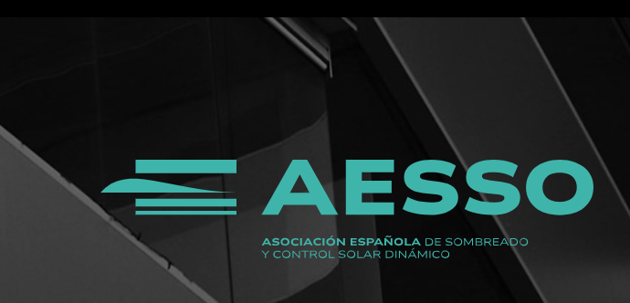

La calculadora de factor solar és per a tu?
Si estàs fent reformes a casa i vols conèixer quina quantitat de llum solar entrarà a les habitacions a mi no em miris, jo només he fet el codi. Però sí que li pots passar això al teu arquitecte i ell ja s'apanyarà amb la informació que n'extregui.
Què està funcionant de veritat
- Procés d'ús més curt i fàcil d'explicar internament.
- Resultat final llest per compartir amb clients i equips.
- Integració neta al seu entorn web habitual.
I ara què
Ara toca continuar picant pedra: polir l'experiència, ampliar casos d'ús i fer que la calculadora sigui encara més robusta. No em preocupa fer soroll; em preocupa que serveixi i que la gent la vulgui continuar utilitzant.